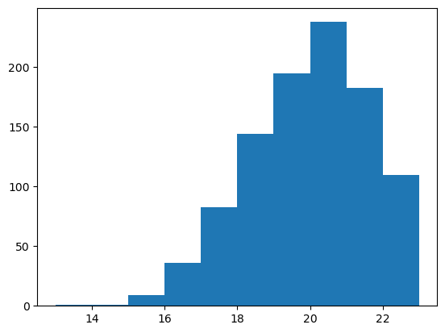

# TODO remove normality assumption
# TODO remove max 25 assumptionset
A set contains a set number of points, breaks, timeouts and other
Based on this study assume that the length of a point and break between a set are normally distributed and equal to: - TODO should change to be left skewed
Let PM be the point legth in a mens volleyball game \[PM \sim N(4.99, 4.35^2)\] Let RM be the ress length in a mens volleyball games, \[RM \sim N(29.02, 19.44^2)\]
Let PW be the point legth in a womens volleyball game \[PW \sim N(6.88, 5.92^2)\] Let RW be the ress length in a womens volleyball games, \[RW \sim N(29.92, 18.21^2)\]
Assume elite volleyball point times are comparable to ACT club times
Assume that there are 3 timeouts per set - TODO change this eventually
Assume one team always gets 25 (doesn’t go above) - Therefore the other team can’t exceed 23
Assume that the number of points for the second team follows a binomial distribution: \[X \sim Bin(23, 0.85)\]
test_bin = np.random.binomial(23, 0.85, 1000)
plt.hist(test_bin)
plt.show()
VballSet
VballSet (div:str)
Creates a set with and times the length of a set
| Type | Details | |
|---|---|---|
| div | str | The division of the set [PM, PW, RM, RW] |
VballSet.GetTime
VballSet.GetTime ()
VballSet.GetTime
VballSet.GetTime ()
Tests
Include some examples and unit tests below
pw_set = VballSet("PW")pw_set.GetTime()1711.295522824047foo
foo ()
43 * 6.88295.84